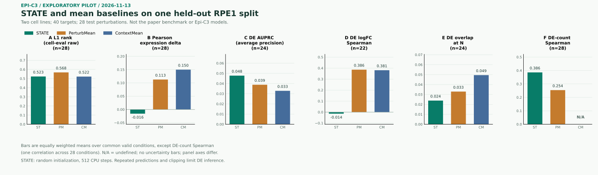

低代表性 RPE1
从两系都至少有 100 个细胞的 565 个共同靶点中，随机选取 40 个。K562 的 40 个靶点全部用于训练；RPE1 划为 10 个训练、2 个验证和 28 个测试靶点。测试靶点在 K562 训练中出现，所以这是跨情境试验，不是全局未见靶点。
REAL-DATA PIPELINE PILOT / 2026.11.13 / STATIC SNAPSHOT
使用 K562 与 RPE1 的公开 CRISPRi 数据，在同一输入、对照和测试划分上运行 STATE 与两个均值基线，并用 cell-eval 计算六类指标。
01 / ONE COMMON SPLIT
图中只使用本次真实试验的汇总值；不同指标各用独立纵轴。柱子不是误差棒，单次划分无法估计跨划分不确定性。

| 指标 | 条件数 | STATE | PerturbMean | ContextMean |
|---|---|---|---|---|
| 正在读取结果；也可直接打开下方聚合 JSON。 | ||||
4 个真实扰动的显著 DE 基因数为零，因此 DE AUPRC 和 overlap 排除它们；另有 2 个条件仅有 1 个真实显著基因，logFC Spearman 进一步排除它们。ContextMean 各扰动的预测 DE 基因数恒定，相关性未定义，不作为零分。
02 / EXPERIMENT DESIGN
元数据选靶与抽样方案在读取表达值前冻结；三个方法使用相同划分、基因轴、对照角色及预测细胞数。
从两系都至少有 100 个细胞的 565 个共同靶点中，随机选取 40 个。K562 的 40 个靶点全部用于训练；RPE1 划为 10 个训练、2 个验证和 28 个测试靶点。测试靶点在 K562 训练中出现，所以这是跨情境试验，不是全局未见靶点。
每个靶点每个细胞系抽取 100 个细胞；按原始测得文库总量缩放到 10,000 后取 log1p。只用 5,000 个训练扰动细胞及 3,230 个模型输入训练对照选择 2,000 个高变基因。
RPE1 输入对照分为 280 个扰动预测 parent 和 280 个预测对照 parent；另从输入外的参考对照中选 280 个真实对照。三类身份不重叠；每个测试扰动有 100 个不同 parent。
模型输入共 11,230 行，另有 560 个不进入模型输入的参考对照，其中 280 个用于评分。测试靶点在 RPE1 中各有 100 个真实细胞；真实处理细胞的表达在推理前被替换，未作为模型输入。
STATE 为官方代码固定提交的小配置：隐藏维度 64、一层编码与解码、集合长度 8、种子 42，随机初始化后训练 512 个 CPU 更新。两个官方均值基线从训练数据计算统计量，各完成 1 个全局训练步；配置文件的最大步数不等于这两个基线的实际步数。
03 / METRIC SEMANTICS
评分使用 cell-eval 0.8.2 与 pdex 0.3.0。DE 使用 Mann–Whitney/Wilcoxon 秩和检验、每个扰动内 BH 校正和 FDR < 0.05。
| 指标 | 本试验的计算口径 |
|---|---|
| L1 排名 | 比较各扰动相对于对照的平均表达效应，按 L1 距离排序；若靶基因在特征轴中则排除。cell-eval 返回 1 − rank / 28；这不是论文归一化 PDS，不能直接换算后混排。 |
| 表达变化 Pearson | 预测与真实平均表达相对各自对照之差的 Pearson 相关；当前实现不排除特征轴中的靶基因。 |
| DE AUPRC | 以真实 FDR < 0.05 为标签、预测 FDR 排序，实际计算 average precision；真实标签只有一类时未定义。 |
| DE logFC Spearman | 只对真实显著基因比较 log fold change 的排序；真实显著基因少于两个或相关性不有限时未定义。 |
| DE overlap at N | N 为真实显著基因数；预测显著基因按绝对 logFC 排序后截取至多 N 个，与真实显著集合求交并除以 N。真实 N 为零时排除。 |
| DE 基因数 Spearman | 对全部 28 个扰动的真实和预测显著基因数求 Spearman，包括真实零值；任一侧恒定时未定义。此处从 cell-eval 的逐扰动计数另行汇总。 |
本次 DE 设置为 is_log1p=True、geometric_mean=True、epsilon=0。在 28 × 2,000 个基因—条件组合中，真实 logFC 有 3 个无穷值；STATE 预测有 704 个。当前排序实现把无穷值当作极端秩。
有限值敏感性结果见聚合 JSON。
独立算术审计重新计算 L1 排名、Pearson、average precision、logFC 相关、DE 计数及 overlap，并复核 BH 校正与部分秩和检验。其目的仅是核对这些实现，不消除下述实验局限。
04 / LIMITATIONS
数值差异是管线试验的描述，不是稳定排名、因果结论或跨研究比较。
同一 parent 可在不同扰动间复用；2,800 次扰动预测中有 33 次因同批容量不足而跨批次分配。DE 检验未把批次作为协变量。
STATE 同集合输出由注意力耦合；ContextMean 在每个扰动下的 100 个预测向量完全相同。将重复预测用于 DE 会影响显著性解释，不能把它们视为独立生物学重复。
推理后按官方流程裁剪到 [0, 14]。PerturbMean 的 3,080 × 2,000 个预测值中有 1,666,400 个负值被截断，约 27.1%；STATE 训练预算也只是可行性试验。
数据来自 scPerturb 数据集中的 Replogle K562 与 RPE1 文件；集合记录标示 CC BY 4.0，原始研究数据条款仍适用。原始研究：Replogle 等，Cell，2022。论文解读：Adduri 等，Cell，2026。
STATE 官方代码许可为 CC BY-NC-SA 4.0；其模型许可及使用政策另行适用。本页面不分发原始单细胞数据、细胞身份、parent 映射或模型权重。